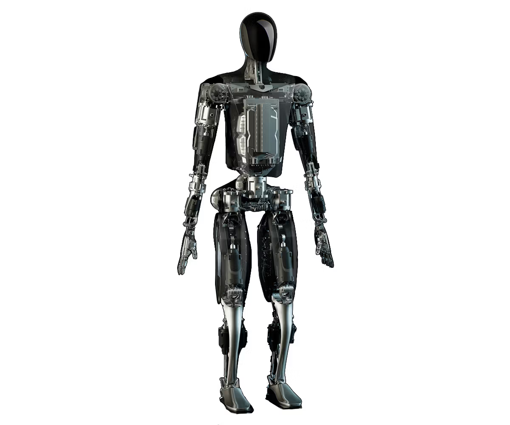

Optimus (named after the Transformers character with the same name), also known as Tesla Bot, is a general-purpose robotic humanoid under development by Tesla, Inc. It was announced at the company's Artificial Intelligence (AI) Day event on August 19, 2021,[1] and a prototype was shown in 2022.

On April 7, 2022, a display for the product was featured at the Tesla Giga Texas manufacturing facility during the Cyber Rodeo event. Musk said that he hoped to have the robot production ready by 2023 and claimed Optimus will eventually be able to do "anything that humans don’t want to do." In June 2022, Musk announced the first prototype that Tesla hoped to unveil later in 2022 at the second AI Day event and stated on Twitter that it would not look anything like the model displayed at the Cyber Rodeo event.
